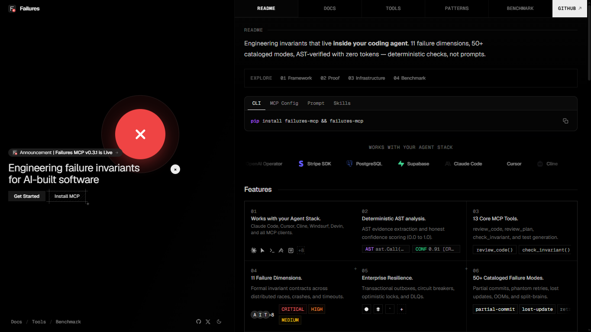
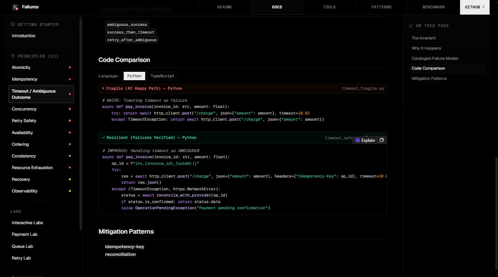
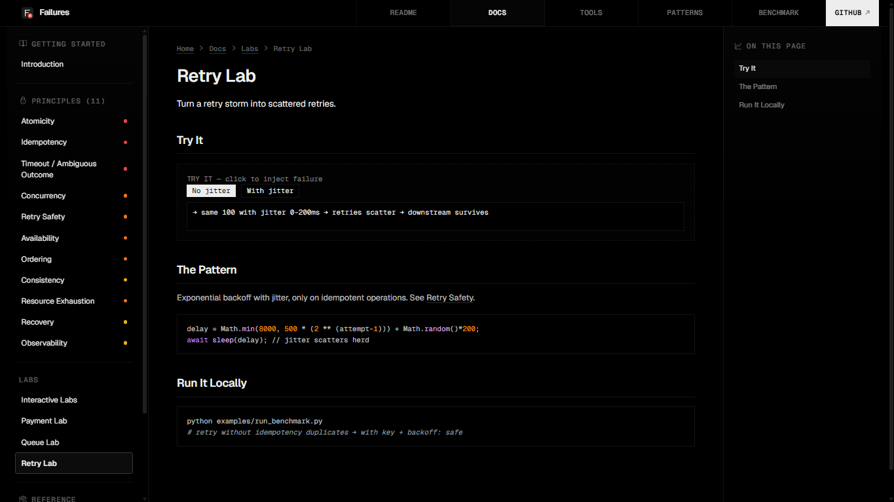
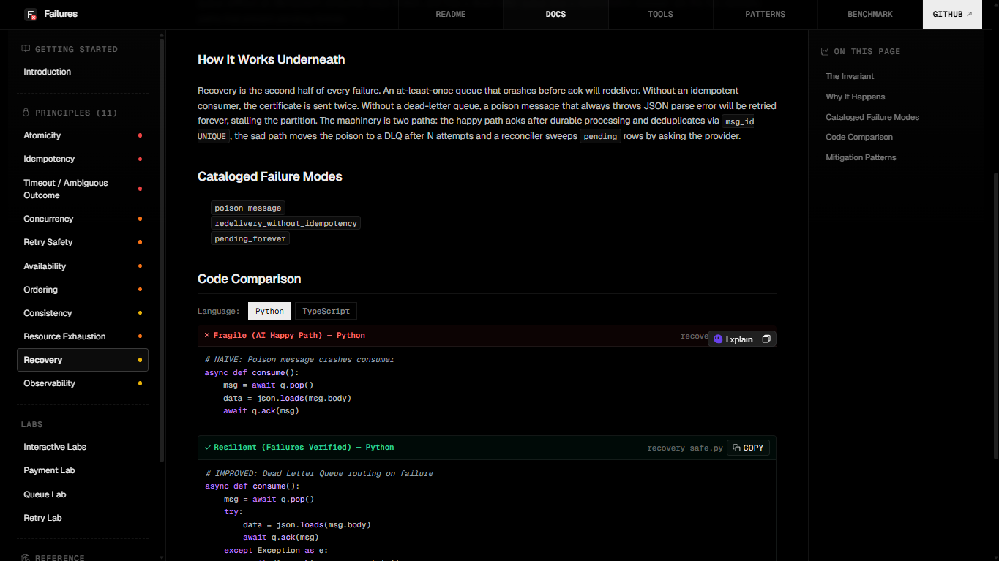

Failures
A deterministic MCP server that makes coding agents reason about failure modes—via AST checks with line evidence and confidence scores, not prompts. 13 tools, 11 failure dimensions, 50+ cataloged modes. Zero tokens, zero hallucination.




Context
Coding agents write happy-path code because their training data is happy-path tutorials. They don’t ask what happens if the provider succeeds but the response is lost, whether a call can be retried safely, or what breaks when two requests modify the same record concurrently. The result is code that works in demos and falls apart in production—partial commits, phantom retries, lost updates, split-brains.
What I built
A Model Context Protocol server that intercepts autonomous coding agents and enforces 11 engineering invariants—atomicity, idempotency, timeout/ambiguous outcome, concurrency, ordering, consistency, availability, resource exhaustion, recovery, observability, and retry safety—checked deterministically before code ships. The engine uses Abstract Syntax Tree traversal for evidence extraction and honest confidence scoring (0.0 to 1.0) with line-level evidence. No token spend, no hallucination.
It ships with 13 core MCP tools including review_code, review_plan, check_invariant, and automated test generation. The knowledge base catalogs 50+ concrete failure modes (partial commits, phantom retries, lost updates, OOMs, poison pills, split-brains) and maps them to engineering patterns—transactional outboxes, circuit breakers, optimistic locks, dead-letter queues.
Why this approach
Prompting an LLM to “think about edge cases” produces different results every time, misses failure modes it hasn’t seen in training data, and burns tokens on every call. By keeping the engine deterministic and AST-based, Failures gives the same answer to the same code every time—with zero cost per check and zero chance of hallucinated findings. The framework compares naive LLM generation against Failures-verified code across atomicity, concurrency, ordering, and timeout dimensions.
Role & scope
End-to-end: the failure taxonomy, the AST analysis engine, the confidence calibration system, the MCP server integration, the benchmark harness, the knowledge graph of principles → failure modes → patterns → tests, and the documentation site with interactive labs.
Result
Tested against 24 adversarial scenarios across payments, inventory, webhooks, uploads, and queues plus 6 live agent evaluations—100% detection rate. Works with Claude Code, Cursor, Cline, Windsurf, and all MCP clients. Published on PyPI as failures-mcp with a single install command.
The benchmark reduced critical findings from 3 to 0 on payment flows, eliminated queue failures with dead-letter queue patterns, and demonstrated that deterministic AST checks outperform prompt-based reviews on every dimension—while costing exactly zero tokens per analysis.